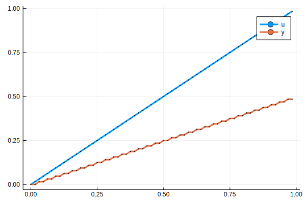
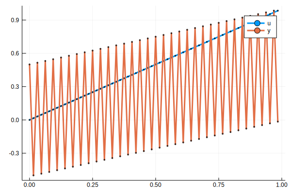

Breaking Algebraic Loops
It this tutorial, we will simulate model consisting a closed loop feedback system. The model has an algebraic loop.
Algebraic Loops
In a clocked simulation environment such as Jusdl, algebraic loops are problematic. This is because, at any instant of time, the components in the model are evolved. During this evolution, components read their inputs. If data is not available in their input busses, the components wait until data is available in their input busses. If the model has an algebraic loop, all the components in the algebraic loop wait for other components to produce data and drive them. However, since the components in the algebraic loop are feed-through loops, i.e. the outputs of the components depend directly on its inputs, a wait loop occurs. This wait-loop makes the simulation of the model get stuck. A system whose model includes algebraic loops can be simulated, though. One way is to remodel the system so that the model has no algebraic loops anymore. This can be done by explicitly solving algebraic equations of algebraic loops. Or, a Memory component can be added anywhere in the algebraic loop. The drawback of using a memory component is that the initial condition of the memory should be compatible with the model.
Simulation When Memory is Initialized Correctly
The original model consists of a generator and an adder. So, we start with these components
gen = FunctionGenerator(identity)
adder = Adder(Bus(2), (+, -))Adder(signs:(+, -), input:Bus(nlinks:2, eltype:Link{Float64}, isreadable:false, iswritable:false), output:Bus(nlinks:1, eltype:Link{Float64}, isreadable:false, iswritable:false))To break the algebraic loop, we construct a memory.
mem = Memory(Bus(1), 1, initial=0.)Memory(ndelay:1, input:Bus(nlinks:1, eltype:Link{Float64}, isreadable:false, iswritable:false), output:Bus(nlinks:1, eltype:Link{Float64}, isreadable:false, iswritable:false))For data recording, we construct writers.
writerout = Writer(Bus(length(adder.output)))
writerin = Writer(Bus(length(gen.output)))Writer(path:/tmp/e35a2490-2672-44ea-803a-ce78ecd78c54.jld2, nin:1)The next step is to connect the components. Note that we placed the memory on the feedback path from the output of adder to its second link of its input bus.
connect(gen.output, adder.input[1])
connect(mem.output, adder.input[2])
connect(adder.output, mem.input)
connect(mem.output, writerout.input)
connect(gen.output, writerin.input)Now we are ready to construct and simulate the model.
t0, dt, tf = 0, 1 / 64, 1.
model = Model(gen, adder, mem, writerout, writerin)
sim = simulate(model, t0, dt, tf)Simulation(state:done, retcode:success, path:/tmp/Simulation-40ecef43-6ae2-4d37-aae1-52a31976232c)After the simulation, let us check whether the tasks are terminated securely.
model.taskmanager.pairsDict{Any,Any} with 5 entries:
FunctionGenerator(output… => ComponentTask{Task,Task}(Task (done) @0x00007f74…
Memory(ndelay:1, input:B… => ComponentTask{Task,Task}(Task (done) @0x00007f74…
Adder(signs:(+, -), inpu… => ComponentTask{Task,Task}(Task (done) @0x00007f74…
Writer(path:/tmp/Simulat… => ComponentTask{Task,Nothing}(Task (done) @0x00007…
Writer(path:/tmp/Simulat… => ComponentTask{Task,Nothing}(Task (done) @0x00007…Next, we read the data from the writers and plot them,
using Plots
t, y = read(writerout, flatten=true)
t, u = read(writerin, flatten=true)
plot(t, u, label=:u, marker=(:circle, 1))
plot!(t, y, label=:y, marker=(:circle, 1))qt5ct: using qt5ct plugin
Simulation When Memory is Initialized Incorrectly
We know that when the relation is
where $u(t)$ is the input and $y(t)$ is the output. Thus for $u(t) = t$, $y(0) = u(0) / 2 = 0$. This implies, the initial condition of the memory is $0$. If the initial condition of the memory is different, then oscillations in the output of the memory occurs which lead inaccurate results. See the full script below.
using Jusdl
using Plots
# Simualation settings
t0, dt, tf = 0, 1 / 64, 1.
# Construct model blocks
gen = FunctionGenerator(identity)
adder = Adder(Bus(2), (+, -))
mem = Memory(Bus(1), 1, initial=0.5) # Initial condition is very important for accurate solutions.
writerout = Writer(Bus(length(adder.output)))
writerin = Writer(Bus(length(gen.output)))
# Connect model blocks
connect(gen.output, adder.input[1])
connect(mem.output, adder.input[2])
connect(adder.output, mem.input)
connect(mem.output, writerout.input)
connect(gen.output, writerin.input)
# Construct the model
model = Model(gen, adder, mem, writerout, writerin)
# Simulate the model
sim = simulate(model, t0, dt, tf)
# Display model taskmanager
display(model.taskmanager.pairs)
# Read the simulation data
t, y = read(writerout, flatten=true)
t, u = read(writerin, flatten=true)
# Plot the results
plot(t, u, label=:u, marker=(:circle, 1))
plot!(t, y, label=:y, marker=(:circle, 1))[ Info: 2020-02-23T02:20:30.045 Started simulation...
[ Info: 2020-02-23T02:20:30.045 Inspecting model...
[ Info: 2020-02-23T02:20:30.045 Done.
[ Info: 2020-02-23T02:20:30.045 Initializing the model...
[ Info: 2020-02-23T02:20:30.045 Done...
[ Info: 2020-02-23T02:20:30.045 Running the simulation...
[ Info: 2020-02-23T02:20:30.049 Done...
[ Info: 2020-02-23T02:20:30.049 Releasing model components...
[ Info: 2020-02-23T02:20:30.049 Done.
[ Info: 2020-02-23T02:20:30.049 Terminating the simulation...
[ Info: 2020-02-23T02:20:30.068 Done.
qt5ct: using qt5ct plugin